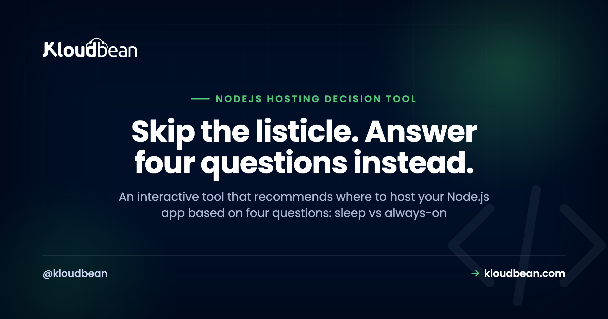

Which Node.js Host Should You Use? A Decision Tool

Most "which Node.js host should you use" articles hand you a ranked list and hope one fits. The honest answer depends on your app: whether it can sleep, whether it runs background work, whether it needs a database, and what you care about most. So instead of another list, here's a tool. Answer four questions and it recommends a host, fairly, including the ones that aren't us when they fit better.
It depends on four things. If your app can sleep, a free tier (Render or Railway) is fine. For the fastest first deploy, Railway. For global edge latency, Fly.io. For a Next.js frontend with a light API, Vercel. For an always-on app with a database and a predictable bill, a managed cloud like Kloudbean. For the lowest sticker price with full control, a plain VPS you run yourself. The decision tree below takes you to one of them.
Answer these four questions
No widget, no clicking through a quiz. Read the four questions, note your answers, and follow the tree. It takes about a minute, and it's the same logic any honest recommendation runs on.
- Does your app need to stay awake? It can sleep when idle (hobby, demo, internal), or it must be always-on (real users, APIs, webhooks).
- Does it run background work? Jobs, queues, or WebSockets, or just simple request and response.
- Does it need a database? Yes, or no and external.
- What matters most? Fastest first deploy, a predictable monthly bill, global edge latency, or lowest price and full control.
How the answers map to a pick, and what each pick costs you:
| Your answers | The pick | What you are accepting |
|---|---|---|
| Can sleep, no background work | A free tier | A cold start on the first request after idle |
| Priority is global edge latency | Fly.io | More operational work, and multi-region state becomes your design problem |
| Priority is the fastest first deploy | Railway | A metered bill that gets harder to forecast as the app grows |
| Priority is lowest price and full control | A plain VPS you run | Patching, backups, SSL, uptime, and the pager, all yours |
| Always-on, usually with a database, wants a predictable bill | A managed cloud like Kloudbean | Less low-level control than a raw VPS, in exchange for not operating one |
Why these four questions, and not twenty
The recommendation isn't random. Four questions do almost all the work of choosing a Node.js host, and each one rules out whole categories.
Can it sleep? This is the biggest fork. Free tiers save money by spinning your app down when idle, then paying that back as a cold start: on Render's free tier, for example, a web service spins down after about 15 minutes and takes roughly a minute to wake. Fine for a demo, quietly bad for anything a customer touches. An always-on app rules the free tier out.
Does it do background work? Queues, cron, WebSockets, and long-running processes need a persistent server. Serverless-first platforms fight all four, because functions are short-lived and stateless. If your app has a worker or a live connection, you want an always-on host.
Which is a question worth asking a host directly, because "always-on" is not a universal default. A managed cloud runs your app as a persistent process under a supervisor (PM2 on Kloudbean, with multi-process mode when you want more than one core), so nothing spins it down between requests and a queue consumer stays connected. A platform built around short-lived functions will fight you on all four of those workloads no matter how you configure it.
Does it need a database? Most do. Where the database lives decides latency and a surprising slice of the bill. If the app is in one place and the database is a separate metered vendor, you pay for every round trip. Keeping them together is the underrated win.
This is the question that separates the picks most sharply, so it's worth being concrete. On a managed cloud the database is provisioned in the same dashboard as the app, one of seven engines (MySQL, MariaDB, PostgreSQL, Redis, Memcached, Elasticsearch, MongoDB), allow-listed so only your app server's IP can connect, with automatic backups from the start. That's one bill and one hop. The alternative shape, app on one vendor and database on another, is perfectly workable and it does mean every query crosses a network boundary you're paying for twice.

What do you care about most? This breaks ties. Fastest deploy points to Railway. Predictable billing points to a flat managed plan. Global latency points to Fly.io. Lowest sticker with full control points to a VPS. There's no universal winner, only the one that fits your priority.
The profiles, at a glance
Prefer to skim? Open the situation that sounds like yours.
I'm building a prototype or a demo
I want the fastest possible first deploy
My users are global and latency is a product feature
It's a Next.js frontend with a light API
It's an always-on app with a database and I want a predictable bill
I want the lowest price and full control
Four things this tree deliberately doesn't decide
A decision tool that pretends to answer everything is just a listicle with extra steps. So here's the edge of what four questions can do, and where you'll have to go look at your own app instead.
It doesn't know your traffic shape. "Always-on" is a claim about your users, not your code. If nobody hits the app between midnight and 8am and nothing queues in that window, scale-to-zero genuinely saves you money and the tree pointing you at an always-on plan is the tree being wrong. Check your access logs before you trust question one.
It doesn't tell you why a page is slow. Cold starts and slow queries feel identical to a user and have nothing in common. Moving hosts fixes the first and does absolutely nothing for the second. Time a request on a warm instance before you conclude the platform is the problem.
It doesn't map the boundary of the managed pick. Worth knowing before you land on one rather than after. On a managed cloud you get the server, the stack, TLS, patching, backups and the database handled, and the app runs always-on. Some things sit outside the standard plan: Docker is available under customisation on premium or enterprise rather than as a standard-plan feature, and Kubernetes, autoscaling and private networking come with Enterprise. If your architecture needs one of those, that's a scope question to settle up front, not a surprise in week three.
It doesn't fix your app. No host fixes this, ours included. Every option in the tree will start the process you hand it, faithfully, including the one that dies on a bad migration or reads a config key you never set, and then restart it just as faithfully. Hosting decides where your code runs and how much of the operating you do. It has never once decided whether the code works.
So use the tree for what it is: a fast way to eliminate four categories that don't fit, leaving you with one that does. Then go read your logs.
Related, if you want to go deeper
The full prose version of this decision is where to deploy a Node.js app. For head-to-heads, Render vs Railway vs Kloudbean. For the hands-on side, deploy a Node app to a managed cloud and managed PostgreSQL hosting.
Take it off localhost for good.
Run the app as an always-on process with managed databases, Redis, object storage, and automatic backups beside it. Deploy from Git with live build logs, and keep the infrastructure someone else's problem.
- ✓ Managed databases
- ✓ Always-on processes
- ✓ Object storage
- ✓ Automatic backups
- ✓ Free SSL
- ✓ Git deploy
- ✓ Free migration
FAQ
Which Node.js host should I use?
It depends on whether your app can sleep, whether it runs background work, whether it needs a database, and your top priority. A sleepy hobby project fits a free tier; a prototype fits Railway; global latency fits Fly.io; a Next.js frontend fits Vercel; an always-on app with a database and a predictable bill fits a managed cloud like Kloudbean; and lowest-cost-with-control fits a VPS. The tool above matches your answers to one.
Is a free tier okay for a production Node.js app?
Usually not. Free tiers spin down when idle and cold-start on the next request, so the first visitor after a quiet stretch waits, and some free databases are time-limited. That's fine for demos and internal tools, but a customer-facing app generally wants an always-on host so it's warm and durable.
Do I need an always-on server or is serverless fine?
Serverless is great for short, stateless requests and spiky traffic. If your app holds WebSocket connections, runs queues or cron, or does long-running work, an always-on server fits better because functions are short-lived and can't hold those cleanly. Match the model to what the app actually does between requests.
Does my Node.js host need to include a database?
Not strictly, but it helps a lot. When the app and database share one account, queries skip a trip to a separate metered vendor, which cuts latency and avoids egress charges. A host that runs both in one dashboard removes a whole class of cost and wiring compared with stitching two vendors together.
What is the cheapest always-on Node.js host?
Free tiers are cheapest but they sleep, so for always-on the real choices are a plain VPS if you'll run the ops yourself, or a flat managed plan (Kloudbean starts at $8/mo) if you want the server and database handled without a metered bill. Compare the total, including the database, egress, and your own time.
Prototype now, production later, should I pick different hosts?
You can, and many do, but switching later has a cost: moving workers, the database, environment variables, and DNS. If you already know the app is heading to always-on production with a database, starting on a predictable managed host can save a migration. If it's genuinely a throwaway, optimize for speed now and move if it survives.